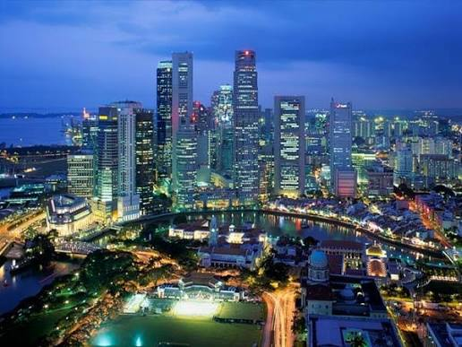

ประเทศฟิลิปปินส์ (Philippines)

เมืองหลวงคือมะนิลา ปกครองแบบสาธารณรัฐมีประธานาธิบดีเป็นประมุข เศรษฐกิจโตด้วยอุตสาหกรรมบริการเอาท์ซอร์ส (BPO) และเงินส่งกลับจากแรงงานในต่างประเทศ มีจุดเด่นด้านประชากรที่สื่อสารภาษาอังกฤษได้ดีเยี่ยมฟิลิปปินส์ตั้งอยู่ในแถบวงแหวนแห่งไฟและใกล้กับเส้นศูนย์สูตร ทำให้มีแนวโน้มสูงที่จะประสบภัยจากแผ่นดินไหวและไต้ฝุ่น แต่ก็ทำให้มีทั้งทรัพยากรธรรมชาติที่อุดมสมบูรณ์และความหลากหลายทางชีวภาพอย่างยิ่งเช่นกัน ฟิลิปปินส์มีเนื้อที่ประมาณ 300,000 ตารางกิโลเมตร (115,831 ตารางไมล์)และมีประชากรประมาณ 100 ล้านคนนับเป็นประเทศที่มีประชากรมากที่สุดเป็นอันดับที่ 8 ในเอเชีย และเป็นประเทศที่มีประชากรมากที่สุดเป็นอันดับที่ 12 ของโลก นอกจากนี้ ณ ปี พ.ศ. 2556 ยังมีชาวฟิลิปปินส์อีกประมาณ 10 ล้านคนอาศัยอยู่ในต่างประเทศรวมแล้วถือเป็นกลุ่มคนพลัดถิ่นที่ใหญ่ที่สุดกลุ่มหนึ่งของโลก ความหลากหลายทางชาติพันธุ์และวัฒนธรรมปรากฏให้เห็นตลอดทั้งหมู่เกาะ ในยุคก่อนประวัติศาสตร์ มนุษย์กลุ่มแรกที่เข้ามาตั้งรกรากในหมู่เกาะแห่งนี้คือกลุ่มชนนิกรีโต ตามมาด้วยกลุ่มชนออสโตรนีเซียนที่อพยพเข้ามาอย่างต่อเนื่อง มีการติดต่อแลกเปลี่ยนกับชาวจีน มลายู อินเดีย และอาหรับ จากนั้นก็เกิดนครรัฐทางทะเลขึ้นมาหลายแห่งภายใต้การปกครองของดาตู ลากัน ราชา หรือสุลต่าน เฟอร์ดินานด์ มาเจลลัน ได้มาขึ้นฝั่งที่เกาะโฮโมนโฮน (ใกล้กับเกาะซามาร์) ในปี พ.ศ. 2063 (ค.ศ. 1521) นับเป็นจุดเริ่มต้นของยุคแห่งอิทธิพลและอำนาจของสเปน ในปี พ.ศ. 2085 (ค.ศ. 1542) นักสำรวจชาวสเปนชื่อ รุย โลเปซ เด บิยาโลโบส ได้ตั้งชื่อเกาะซามาร์และเลเตรวมกันว่า "หมู่เกาะเฟลีเป" หรือ "อิสลัสฟิลิปินัส" (Islas Filipinas) เพื่อเป็นเกียรติแด่เจ้าชายเฟลีเปแห่งอัสตูเรียส (ต่อมา อิสลัสฟิลิปินัสได้กลายเป็นชื่อเรียกกลุ่มเกาะทั้งหมด) ในปี พ.ศ. 2108 (ค.ศ. 1565) มิเกล โลเปซ เด เลกัซปี ได้จัดตั้งนิคมสเปนแห่งแรกบนเกาะเซบู[18] ฟิลิปปินส์กลายเป็นส่วนหนึ่งของจักรวรรดิสเปนเป็นเวลานานกว่า 300 ปี ส่งผลให้ศาสนาคริสต์นิกายโรมันคาทอลิกกลายเป็นศาสนาหลักของผู้คนในหมู่เกาะ ในช่วงเวลานี้ มะนิลามีฐานะเป็นศูนย์กลางการบริหารของจักรวรรดิสเปนในเอเชีย และยังเป็นศูนย์กลางทางทิศตะวันตกของการค้าข้ามมหาสมุทรแปซิฟิก โดยเชื่อมโยงเอเชียเข้ากับเมืองอากาปุลโกในอเมริกาผ่านทางเรือใบมะนิลา